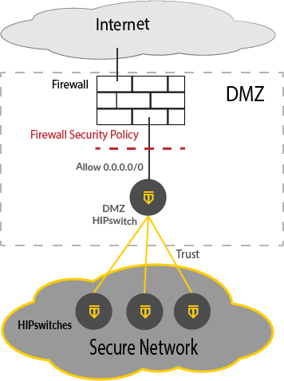

Provide access to the Internet with an Airwall Gateway in the DMZ
Provide Access to the Internet with an \ Airwall Gateway in the demilitarized zone (DMZ).
If you have protected devices that need access to the Internet (to get updates from Windows Update, or report to a cloud reporting service that is not protected by an Airwall Gateway, Agent, or Server, for example), you can provide that access by putting an Airwall Gateway in the DMZ (demilitarized zone, or perimeter network).
How to Provide Access as Securely as Possible
When you put an Airwall Gateway in the DMZ, basically the entire world is a “Trusted Device” for the Overlay, so you need to tightly control the access into the Airwall Gateway Overlay. To do this, you must:
- Locate the Airwall Gateway in the DMZ adjacent to the firewall
- Configure strong firewall policies regarding traffic to and from the Overlay.
- Have a security policy on your firewall that doesn't open the HIP tunnel up to the entire world.
Use the following guidelines to provide access in the most secure way possible.
Before you Begin
This procedure requires the following:
- Conductor V2.2x or later
- A physical or virtual Airwall Gateway v2.2.x or later to use as the DMZ Airwall Gateway.
Before you configure a Airwall Gateway in the DMZ, you must:
- Have a firewall or switch set up on your network and connected to the Internet.
- Have an open port on your firewall or switch to connect the Airwall Gateway.
Deploy the Airwall Gateway in the DMZ
To deploy an Airwall Gateway in the DMZ:
- Install the Airwall Gateway in the DMZ
- Configure the Firewall
- Configure the DMZ Airwall Gateway
- Test the DMZ Airwall Gateway and Firewall Configuration
- Connect the DMZ Airwall Gateway to the Internet
-
Test the Deployment
The following diagram gives an overview of how the Airwall Gateway is installed in the DMZ:

For more details, see the following sections.
Step 1: Install the Airwall Gateway in the DMZ
Install a Airwall Gateway in the DMZ with the Overlay Port plugged in to the Firewall (or the switch that is hosting the DMZ).
Step 2: Configure the Firewall
Configure your firewall to limit inbound traffic to the IP of the Airwall Gateway. You want to allow outbound traffic and inbound traffic for open connections. This configuration prevents hosts on the Internet from scanning the DMZ and the Airwall Gateway. For more information, see the instructions for your firewall.
Step 3: Configure the DMZ Airwall Gateway
Configure the Overlay port group on the DMZ Airwall Gateway as follows:
- Add the IP address of the interface of the Firewall in the DMZ.
- Set the Default Route to the interface of the Firewall.
- Check Enable source NAT to force all overlay traffic to appear to come from the Airwall Gateway.
Step 4: Test the DMZ Airwall Gateway and firewall configuration
Test your configuration to make sure it is working as you expected.
Step 5: Connect the DMZ Airwall Gateway to the Internet
To connect the DMZ Airwall Gateway to the Internet, you set up the local device and Overlay.
- On the DMZ Airwall Gateway, in Local Devices, click Add Device, and add the Local Device 0.0.0.0/0.
- Create an overlay called Internet Access (or similar name, so you know what permissions it implies).
-
Add the Local Device 0.0.0.0/0 and all devices that require Internet
access.
Note: As a best practice, configure overlays to limit connectivity to only those devices and servers that must communicate with each other.
- Create trust from all other members of the Internet Access overlay to only to the 0.0.0.0/0 device (a Hub and Spoke arrangement, not a mesh).
Step 6: Test the deployment
- In the Conductor, open the DMZ Airwall Gateway, and go to .
- In Ping a single IP address, under IP address or hostname, select Overlay Port group.
-
Enter the IP of a known host on the Internet, such as 8.8.8.8, and select
Ping.
If the ping succeeds, the deployment is working.